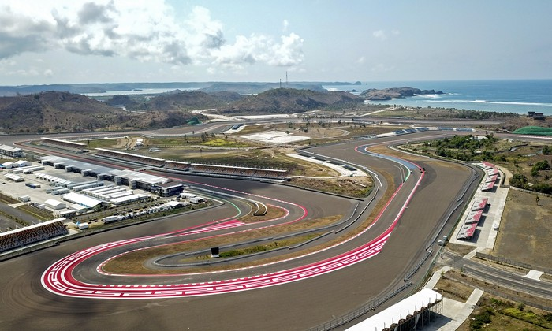

 Sirkuit Mandalika
Sirkuit Mandalika
MotoGP
MotoGP Mandalika 2023 Siap Digelar! 03 Oktober 2023Jakarta - MotoGP Mandalika 2023 siap digelar 13-15 Oktober. Di tahun ke dua penyelenggaraan MotoGP dalam tanah Lombok ini, dibutuhkan semakin membaik & matang. Jangan sampai drama-drama aktualisasi diri mayoritas lalu terulang lagi.
Sirkuit Mandalika

MotoGP
Ingin Tetap dalam MotoGP, Di Giannantonio Incar Kursi Honda. 03 Oktober 2023Di tengah rumor Marc Marquez yang tiada henti, pebalap Gresini Ducati saat ini Fabio di Giannantonio mengingatkan potensi MotoGP-nya dengan menyamai hasil terbaiknya selama akhir pekan Jepang.
Fabio Di Giannantonio
MotoGP
Tembus lima Besar pada MotoGP Jepang 2023, Aleix Espargaro Makin Percaya Diri Tatap MotoGP Mandalika 2023. 03 Oktober 2023Pembalap Aprilia Racing, Aleix Espargaro, penuh percaya diri menatap balapan seri berikutnya, yakni MotoGP Mandalika 2023. Pasalnya, hasil positif baru didapat Aleix dari balapan seri sebelumnya, yakni MotoGP Jepang 2023.
Aleix Espargaro